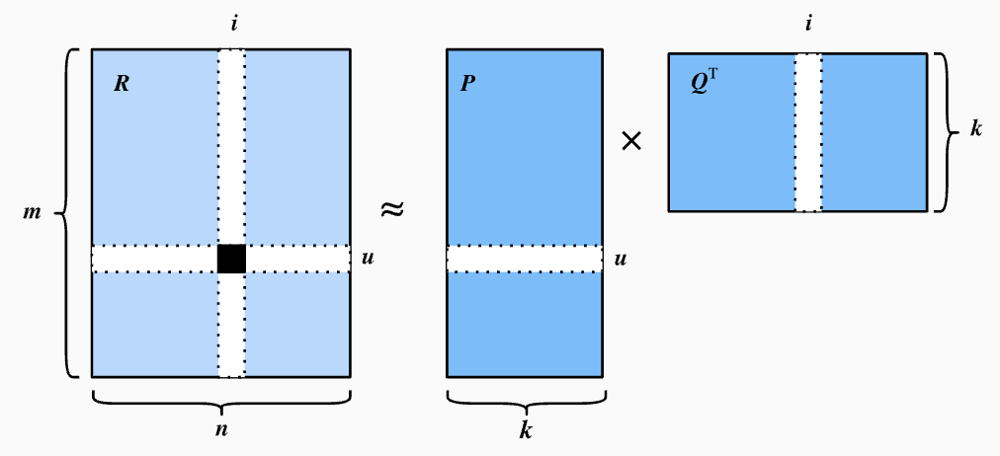

Recommendor Systems with Deep Learning - Matrix Factorization
Overview
Our vignette is on reccomender systems that utilize deep learning techniques. Reccomendation systems are a tool that allow us to analyze interactions between users and items, leveraging historical data to predict future interactions. There are two types of reccomendations systems, content-based and colloboaring filtering, which is what are using. In collaborative filtering, the system predicts user preferences based off the behavior of oother users, assuming that users with similar past preferences will have similar future preferences. Furthermore, advanced reccomendation systems can incorperate machine learning and deep learning techniques to improve accuracy, allowing the system to capture complex on linear relationships in the data.
Data Description
This dataset is sourced from Kaggle after searching for data that matched the structure of examples referenced in the Dive Into Deep Learning textbook. The dataset contains user ratings for products, making it a strong candidate for testing recommendation systems, particularly collaborative filtering models.
The dataset is part of the Amazon Reviews Data repository, which was curated by Julian McAuley. It contains product reviews and ratings across multiple categories. For our project, we specifically utilized the Electronics dataset. The original data source can be found here.
Note: In our data folder we will only include 5000 rows of data for reference because the entire data file is too large to be uploaded on github.
Attribute information:
userId: Every user identified with a unique id (First Column)
productId: Every product identified with a unique id (Second Column)
Rating: Rating of the corresponding product by the corresponding user (Third Column)
timestamp: Time of the rating (Fourth Column)
Matrix Factorization
With the cleaned data, we can construct the sparse user-item matrix containing information of user’s ratings, with unique users as unique rows and unique items as unique columns. The problem with this matrix is that it’s too large, and the goal of imputing the missing entries (the unrated items by each user) can be computationally expensive. To tackle this issue, the common approach is to factorize the matrix into two latent matrices, one explaining the characters of users, another explaining the characters of different items. Figure 3 shows the visualization of matrix factorization, given a \(m \times n\) matrix, we want to create a \(m \times k\) user matrix and a \(k \times n\) matrix, with \(k << m, n\) so that the product of the user and item matrix is a good estimate of the observed user-item matrix.

There are several methods to approach this, one being simply applying Singular Value Decomposition (SVD) and obtaining the user and item matrix directly. This is going to be our benchmark. A more advanced approach is to implement deep learning algorithms to train for the weights (parameters) in the user and item matrix, respectively. To make the product of these two matrices having values close to the observed matrix.
Baseline Model(SVD)
Singular value decomposition (or SVD) is a method of matrix factorization that consists of rescaling and multiple rotations that eventually results in three components: U, a unitary matrix consisting of left singular vectors, ∑, a rectangular matrix consisting of eigenvectors on the diagonal, and V, a complex unitary matrix with right singular vectors. To implement SVD in Python we will use the functions drawn from the scikit-surprise package. We will first specify a reader() object which will help to parse our input data.
from surprise import SVD, Dataset, Reader, accuracy
from surprise.model_selection import train_test_split
reader = Reader(rating_scale=(1, 5))
data = Dataset.load_from_df(data[['user_id', 'item_id', 'rating']], reader)We then create our training and testing sets in addition to initializing our svd model.
trainset, testset = train_test_split(data, test_size=0.2)
svd = SVD()Next, we compute predictions and analyze the model’s accuracy using RMSE and MAE as our evaluation metrics.
predictions = svd.test(testset)
rmse = accuracy.rmse(predictions)
mae = accuracy.mae(predictions)RMSE: 1.2943 MAE: 1.0190
Thus we see that our baseline model, SVD, didn’t perform horribly in terms of RMSE and MAE.